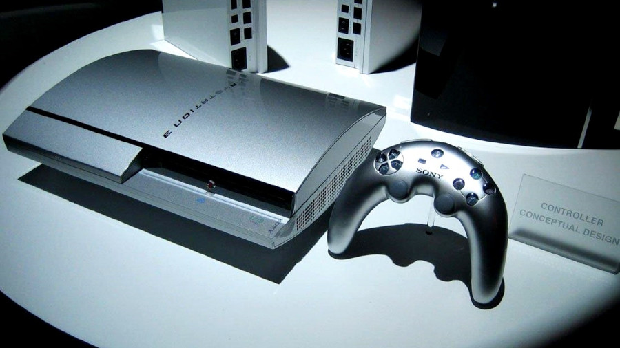
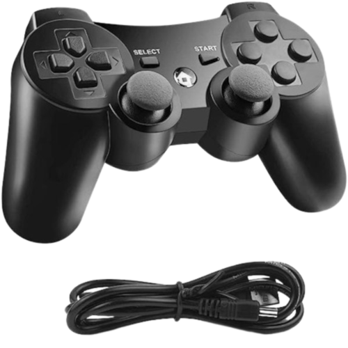
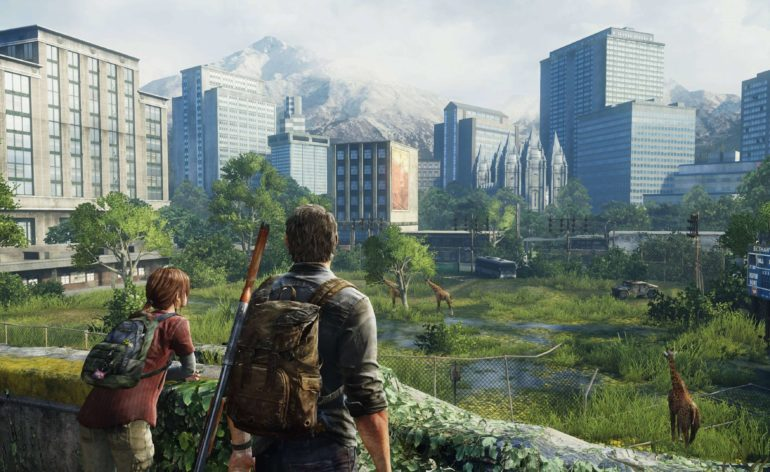

Falaremos aqui sobre o Playstation 3, console lançado em 2006 e gerou muitas polêmicas!
O primeiro modelo.
Depois da geraçao de ouro que a Sony teve com o incrivel Playstation 2, em 2006 ela decidiu lancar uma nova geraçao de video game , que prometia ser muito poderoso para aquela época , diferente o PS2 que usava a midia DVD que tinha pouco espaço de armazenamento , a empresa optou por usar a midia Blueray, que era novidade na época, essa midia prometia mais espaço e longa duração.
Abaixo terá uma foto do primeiro modelo do video game.

Acima observamos o modelo FAT do ps3 , primeiro modelo lançado, o que gerou muita polemica foi o controle no qual o design era horrivel.
tempos depois a Sony lança o SIXAXES controle do ps3 , que na epoca traziaa uma novidade , controle de movimentos , mas nao era todos os jogos que usavam dessa tecnologia , por isso , pouco tempo depois era lançado o DUALSHOCK 3 seguindo o mesmo padrao de design no PS2.

Quais eram as polêmicas?
O ps3 foi o video game que mais deu raiva aos programadores , por sua arquitetura alienigina , que era muito complicada de trabalhar nela.
Assista o video abaixo de entenda sobre a complicada arquitetura que esse console tinha.
Jogos exclusivos.
Apesar de todos o problemas, existia um diferencial, os games exclusivos desta plataforma.
Nesta geraçao nasceu varios titulos como:
God of war 3
Uncharted 1/2/3
Beyond two souls
Infamous
Gran turismo 5
The last of us.
O ps3 tinha uma bibilioteca de jogos incrives, vencendo o seu rival XBOX360 no final da geração.
Um dos games que fez o ps3 dar a volta por cima foi o incrivel The last of us.

Por fim , quase 18 anos se passaram que esse video game lançou , porem vale a pena experimentar a variedades de games que nele possui , hoje em dia sendo desbloqueado , você consegue ter acesso a varios jogos de forma gratuita, apena usando a internet!